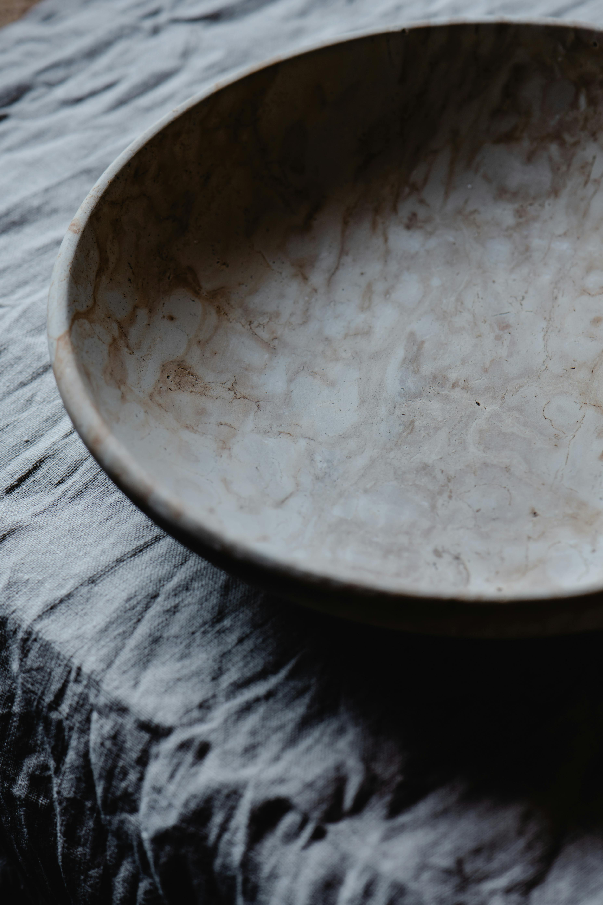

Best Hummus Ever

Note: This recipe is written for a food processor.
This hummus is absurdly good. The picture is an empty bowl because we always finish it before I think to take a photo. We eat it with chips, or pita bread, or chopped fresh veggies, or a spoon. See Variations and Reccomendations for more info.
Incredients
I typoed this as incredients and decided to keep it because this recipe is incredible.
- 1 can chickpeas (drained, rinsed)
- 2 garlic cloves, peeled
- 1 tsp kosher salt
- 1/4 tsp cumin (extremely optional)
- pinch cayenne or some jalapeño, to taste (optional)
- 1 bunch of cilantro
- remove the biggest stems that are easy to chop, chop the rest finely enough that your food processor won't leave them in long strands
- reserve some if you want to stir it in at the end to make it look prettier and have brighter pops of cilantro flavor
- 1 tbsp water
- juice from one whole lemon
- 6 tbsp (90 grams) tahini
- 2 tbsp olive oil
Steps
- Combine chickpeas, garlic, salt, cumin, spicy, cilantro in food processor.
- Run proessor for 15 seconds.
- Scrape sides and start processor again.
- While running, add water and lemon juice, then run for 1 minute.
- Add tahini and oil, run until the consistency is what you want.
- If you reserved any cilantro, stir it in. One might even fold it in.
Variations and Recommendations
- Substitute other things for cilantro, such as more garlic, or roasted red pepper.
- Increase or decrease spicy ingredients.
- To create your ideal texture:
- Change the amount of food processing time.
- Reduce or increase water. If your cilantro is very wet you may want to leave the water out entirely.
Acknowledgements